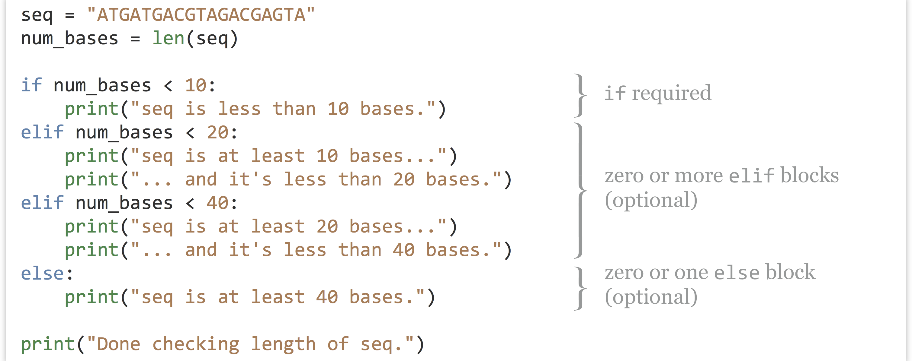
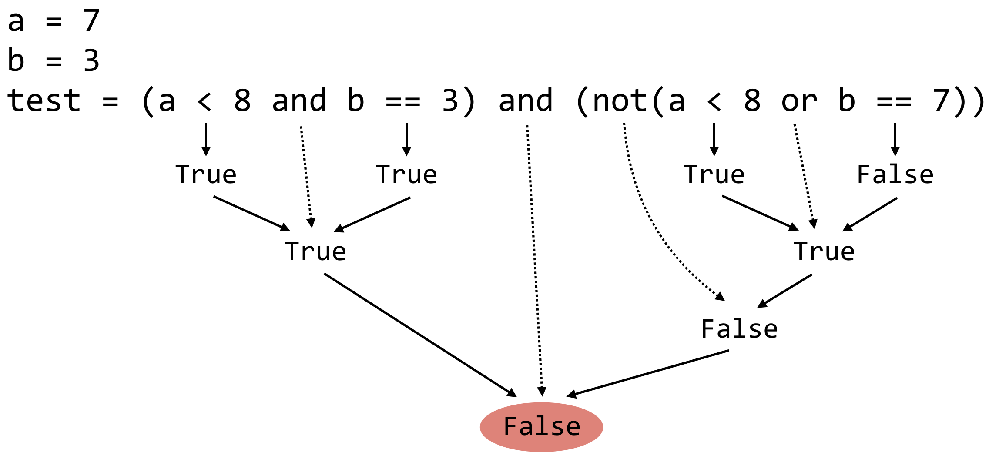
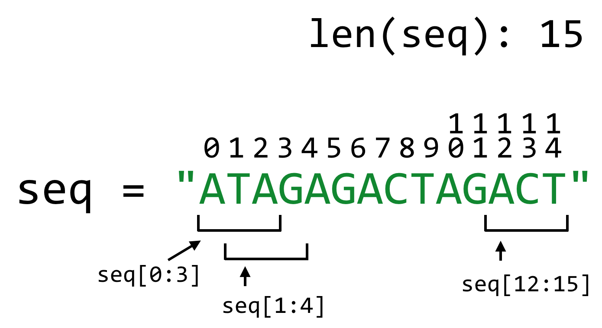

Chapter 19 Conditional Control Flow
The phrase “control flow” refers to the fact that constructs like for-loops change the flow of program execution away from the simple top-to-bottom order. There are several other types of control flow we will cover, two of which are “conditional” in nature.
Using If-Statements
If-statements allow us to conditionally execute a block of code, depending on a variable referencing a Boolean True or False, or more commonly, a condition that returns a Boolean True or False. The syntax is fairly simple, described here with an example.

All the lines from the starting if to the last line in an elif or else: block are part of the same logical construct. Such a construct must have exactly one if conditional block, may have one or more elif blocks (they are optional), and may have exactly one catchall else block at the end (also optional). Each conditional is evaluated in order: the first one that evaluates to True will run, and the rest will be skipped. If an else block is present, it will run if none of the earlier if or elif blocks did as a “last resort.”
Just like with for-loops, if-statements can be nested inside of other blocks, and other blocks can occur inside if-statement blocks. Also just like for-loops, Python uses indentation (standard practice is four spaces per indentation level) to indicate block structure, so you will get an error if you needlessly indent (without a corresponding control flow line like for, if, elif, or else) or forget to indent when an indentation is expected.48
seqs = ["ACGTAGAC", "CAGTAGAGC", "GACGA", "CGATAGG"]
count_short = 0
count_long = 0
for seq in seqs:
num_bases = len(seq)
if num_bases < 8:
count_short = count_short + 1
else:
count_long = count_long + 1
print(f"Number short: {count_short} number long: {count_long}")
The above code would print Number short: 2 number long: 2.
Using While-Loops
While-loops are less often used (depending on the nature of the programming being done), but they can be invaluable in certain situations and are a basic part of most programming languages. A while-loop executes a block of code so long as a condition remains True. Note that if the condition never becomes False, the block will execute over and over in an “infinite loop.” If the condition is False to begin with, however, the block is skipped entirely.
counter = 0
while counter < 4:
print(f"Counter is now: {counter}")
counter = counter + 1
print(f"Done. Counter ends with: {counter}")
The above will print Counter is now: 0, followed by Counter is now: 1, Counter is now: 2, Counter is now: 3, and finally Done. Counter ends with: 4. As with using a for-loop over a range of integers, we can also use a while-loop to access specific indices within a string or list.
seq = "ACAGGACGT"
num_bases = len(seq)
base_index = 0
while base_index < num_bases:
base_i = seq[base_index]
print(f"base is: {base_i}")
base_index = base_index + 1
print("Done")
The above code will print base is: A, then base is: C, and so on, ending with base is: T before finally printing Done. While-loops can thus be used as a type of fine-grained for-loop, to iterate over elements of a string (or list), in turn using simple integer indexes and [] syntax. While the above example adds 1 to base_index on each iteration, it could just as easily add some other number. Adding 3 would cause it to print every third base, for example.
Similarly, we can loop over this string (and other iterable collections such as lists, tuples, etc) using a for-loop and the enumerate() function:
seq = "ACAGGACGT"
base_index = 0
for base_index, base in enumerate(seq):
print(f"base at position {base_index} is: {base}")
print("Done")
This code will print base at position 0 is: A, then base at position 1 is: C, etc. The enumerate() function returns pairs of data: 1. a counter (here equivalent to the index position) and 2. each item of the iterable (here, a character in the string) in turn. We can then assign these values to two variables.49
Boolean Operators and Connectives
We’ve already seen one type of Boolean comparison, <, which returns whether the value of its left-hand side is less than the value of its right-hand side. There are a number of others:
| Code | Meaning | Example |
Evaluates to (with a=7, b=3)
|
|---|---|---|---|
<
|
less than? |
a < b
|
False
|
>
|
greater than? |
a > b
|
True
|
<=
|
less than or equal to? |
a <= b
|
False
|
>=
|
greater than or equal to? |
a >= b
|
True
|
!=
|
not equal to? |
a != b
|
True
|
==
|
equal to? |
a == b
|
False
|
These comparisons work for floats, integers, and even strings and lists. Sorting on strings and lists is done in lexicographic order: an ordering wherein item A is less than item B if the first element of A is less than the first element of B; in the case of a tie, the second element is considered, and so on. If, in this process we run out of elements for comparison, the shorter one is smaller. When applied to strings, lexicographic order corresponds to the familiar alphabetical order.
Let’s print the sorted version of a Python list of strings, which does its sorting using the comparisons above. Note that numeric digits are considered to be “less than” alphabetic characters, and uppercase letters come before lowercase letters.
seqs = ["ACT", "AC", "T", "TAG", "1AC", "A"]
seqs.sort()
print(seqs) # prints ['1AC', 'A', 'AC', 'ACT', 'T', 'TAG']
Boolean connectives let us combine conditionals that return True or False into more complex statements that also return Boolean types.
| Code | Meaning | Example |
Evaluates to (with a=7, b=3)
|
|---|---|---|---|
and
|
True if both are True
|
a < 8 and b == 3
|
True
|
or
|
True if one or both are True
|
a < 8 or b == 9
|
True
|
not
|
True if the following is False
|
not a < 3
|
True
|
These can be grouped with parentheses, and usually should be to avoid confusion, especially when more than one test follow a not.50

Finally, note that generally each side of an and or or should result in only True or False. The expression a == 3 or a == 7 has the correct form, whereas a == 3 or 7 does not. (In fact, 7 in the latter context will be taken to mean True, and so a == 3 or 7 will always result in True. Try it with bool(7)!)
Logical Dangers
Notice the similarity between = and ==, and yet they have dramatically different meanings: the former is the variable assignment operator, while the latter is an equality test.51 Accidentally using one where the other is meant is an easy way to produce erroneous code. Here count == 1 won’t initialize count to 1; rather, it will return whether it already is 1 (or result in an error if count doesn’t exist as a variable at that point). The reverse mistake is harder to make, as Python does not allow variable assignment in if-statement and while-loop definitions.
seq = "ACTAGGAC"
remainder = len(seq)%3
if remainder = 0:
print("Number of bases is a multiple of 3")
print("It's a candidate for an open reading frame.")
In the above, the intent is to determine whether the length of seq is a multiple of 3 (as determined by the result of len(seq)%3 using the modulus operator), but the if-statement in this case should actually be if remainder == 0:. In many languages, the above would be a difficult-to-find bug (remainder would be assigned to 0, and 0 evaluates to False!). In Python, the result is an error: SyntaxError: invalid syntax. Maybe you meant '==' or ':=' instead of '='?. Notice that Python helpfully suggests that perhaps we used the wrong operator and suggests alternatives.
Still, a certain class of dangerous comparison is common to nearly every language, Python included: the comparison of two float types for equality or inequality.
Although integers can be represented exactly in binary arithmetic (e.g., 751 in binary is represented exactly as 1011101111), floating-point numbers can only be represented approximately. This shouldn’t be an entirely unfamiliar concept; for example, we might decide to round fractions to four decimal places when doing calculations on pencil and paper, working with $ $ as 0.3333. The trouble is that these rounding errors can compound in difficult-to-predict ways. If we decide to compute $ / $ as $ 0.33330.3333/0.3333 $, working left to right we’d start with $ 0.33330.3333 $ rounded to four digits as 0.1110. This is then divided by 0.3333 and rounded again to produce an answer of 0.3330. So, even though we know that $ / == $, our calculation process would call them unequal because it ultimately tests 0.3330 against 0.3333!
Modern computers have many more digits of precision (about 15 decimal digits at a minimum, in most cases), but the problem remains the same. Worse, numbers that don’t need rounding in our Base-10 arithmetic system do require rounding in the computer’s Base-2 system. Consider 0.2, which in binary is 0.001100110011, and so on. Indeed, 0.2 * 0.2 / 0.2 == 0.2 results in False!
While comparing floats with <, >, <=, and >= is usually safe (within extremely small margins of error), comparison of floats with == and != usually indicates a misunderstanding of how floating-point numbers work.52 In practice, we’d determine if two floating-point values are sufficiently similar, within some defined margin of error.
a = 0.2
b = 0.2*0.2/0.2
epsilon = 0.00000001
if a + epsilon > b and a - epsilon < b:
print(f"a and b are within {epsilon}")
Counting Stop Codons
As an example of using conditional control flow, we’ll consider the file seq.txt, which contains a single DNA string on the first line. We wish to count the number of potential stop codons "TAG", "TAA", or "TGA" that occur in the sequence (on the forward strand only, for this example).
Our strategy will be as follows: First, we’ll need to open the file and read the sequence from the first line. We’ll need to keep a counter of the number of stop codons that we see; this counter will start at zero and we’ll add one to it for each "TAG", "TAA", or "TGA" subsequence we see. To find these three possibilities, we can use a for-loop and string slicing to inspect every 3bp subsequence of the sequence; the 3bp sequence at index 0 of seq occurs at seq[0:3], the one at position 1 occurs at seq[1:4], and so on.
We must be careful not to attempt to read a subsequence that doesn’t occur in the sequence. If seq = "AGAGAT", there are only four possible 3bp sequences, and attempting to select the one starting at index 4, seq[4:7], would result in an error. To make matters worse, string indexing starts at 0, and there are also the peculiarities of the inclusive/exclusive nature of [] slicing and the range() function!
To help out, let’s draw a picture of an example sequence, with various indices and 3bp subsequences we’d like to look at annotated.

Given a starting index index, the 3bp subsequence is defined as seq[index:index + 3]. For the sequence above, len(seq) would return 15. The first start index we are interested in is 0, while the last start index we want to include is 12, or len(seq) - 3. If we were to use the range() function to return a list of start sequences we are interested in, we would use range(0, len(seq) - 3 + 1), where the + 1 accounts for the fact that range() is range(inclusive:exclusive).53
We should also remember to run .strip() on the read sequence, as we don’t want the inclusion of any \n newline characters messing up the correct computation of the sequence length!
Notice in the code below (which can be found in the file stop_count_seq.py) the commented-out line number 10: #print(codon).
#!/usr/bin/env python
with open("seq.txt", "r") as fhandle:
seq = fhandle.readline()
seq = seq.strip()
stop_counter = 0
for index in range(0, len(seq) - 3 + 1):
codon = seq[index:index + 3]
#print(codon)
if codon == "TAG" or codon == "TAA" or codon == "TGA":
stop_counter = stop_counter + 1
print(stop_counter)
While coding, we used this line to print each codon to be sure that 3bp subsequences were reliably being considered, especially the first and last in seq.txt (ATA and AAT). This is an important part of the debugging process because it is easy to make small “off-by-one” errors with this type of code. When satisfied with the solution, we simply commented out the print statement.
For windowing tasks like this, it can occasionally be easier to access the indices with a while-loop.
#!/usr/bin/env python
with open("seq.txt", "r") as fhandle:
seq = fhandle.readline()
seq = seq.strip()
stop_counter = 0
index = 0
while index <= len(seq) - 3:
codon = seq[index:index + 3]
#print(codon)
if codon == "TAG" or codon == "TAA" or codon == "TGA":
stop_counter = stop_counter + 1
index += 1 # equivalent to index = index + 1
print(stop_counter)
If we wished to access nonoverlapping codons, we could use index = index + 3 rather than index = index + 1 without any other changes to the code. Similarly, if we wished to inspect 5bp windows, we could replace instances of 3 with 5 (or use a windowsize variable).
Exercises
- The molecular weight of a single-stranded DNA string (in g/mol) is (count of
"A") \(*\) 313.21 + (count of"T") \(*\) 304.2 + (count of"C") \(*\) 289.18 + (count of"G") \(*\) 329.21 – 61.96 (to account for removal of one phosphate and the addition of a hydroxyl on the single strand).
Write code that prints the total molecular weight for the sequence in the fileseq.txt. The result should be21483.8. Call your programmol_weight_seq.py. - The file
seqs.txtcontains a number of sequences, one sequence per line. Write a new Python program that prints the molecular weight of each on a new line. For example:
You may wish to use substantial parts of the answer for question 1 inside of a loop of some kind. Call your program21483.8 19461.4 32151.9 ...mol_weight_seqs.py. - The file
ids_seqs.txtcontains the same sequences asseqs.txt; however, this file also contains sequence IDs, with one ID per line followed by a tab character (\t) followed by the sequence. Modify your program from question 2 to print the same output, in a similar format: one ID per line, followed by a tab character, followed by the molecular weight. The output format should thus look like so (but the numbers will be different, to avoid giving away the answer):
Call your programPZ7180000024555 402705.62 PZ7180000000678_B 562981.52 PZ7180000000003_KK 54193.41 PZ7180000000005_NW 416120.04mol_weight_ids_seqs.py.
Because the tab characters cause the output to align differently depending on the length of the ID string, you may wish to run the output through the command line toolcolumnwith a-toption, which automatically formats tab-separated input.[oneils@mbp ~/apcb/py]$ python mol_weight_ids_seqs.py | column -t PZ7180000024555 402705.62 PZ7180000000678_B 562981.52 PZ7180000000003_KK 354193.41 PZ7180000000005_NW 416120.04 - Create a modified version of the program in question 3 of Chapter 17, “Collections and Looping: Lists and for”, so that it also identifies the locations of subsequences that are self-overlapping. For example,
"GAGA"occurs in"GAGAGAGAGATATGAGA"at positions1,3,5,7, and14.
Python is one of the only languages that require blocks to be delineated by indentation. Most other languages use pairs of curly brackets to delineate blocks. Many programmers feel this removes too much creativity in formatting of Python code, while others like that it enforces a common method for visually distinguishing blocks.↩︎
This process of assigning a tuple (which is the data type that
enumeratereturns) to multiple variables, is referred to as tuple unpacking.↩︎In the absence of parentheses for grouping,
andtakes precedence overor, much like multiplication takes precedence over addition in numeric algebra. Boolean logic, by the way, is named after the nineteenth-century mathematician and philosopher George Boole, who first formally described the “logical algebra” of combining truth values with connectives like “and,” “or,” and “not.”↩︎The best CS instructor I ever had always pronouced
=as “takes on the value of” and==as “is equal to?” (that iscount = 3would be read as “count takes on the value of 3” andcount == 3would be “count is equal to 3?”). That was the one term I never switched the two.↩︎You can see this for yourself:
print(0.2*0.2/0.2 == 0.2)printsFalse! Some mathematically oriented languages are able to work entirely symbolically with such equations, bypassing the need to work with numbers at all. This requires a sophisticated parsing engine but enables such languages to evaluate even generic expressions likex*x/x == xasTrue.↩︎Yes, this sort of detailed logical thinking can be tedious, but it becomes easier with practice. Drawing pictures and considering small examples is also invaluable when working on programming problems, so keep a pencil and piece of paper, or a dry erase board and markers, handy.↩︎